Главным символом Сталинградской победы стала «высота 102» – Мамаев курган, в ходе битвы не раз переходивший от советских войск к немцам и обратно. Неудивительно, что мемориальный комплекс в память о погибших воинах было решено построить именно на этом холме.
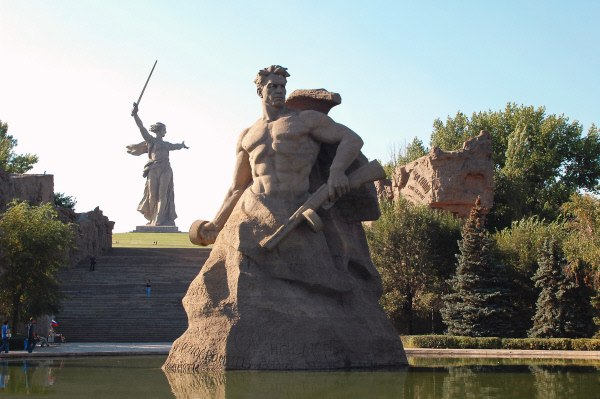Это одна из самых высоких статуй в мире. На ее изготовление ушло 5500 тонн бетона и 2400 тонны железных конструкций.
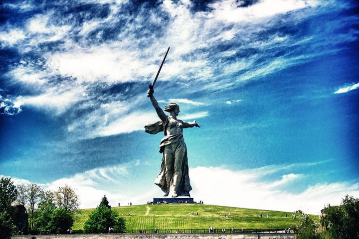360-метровый памятник погибшим в Великой Отечественной войне. Начинается от Площади павших борцов и спускается к Центральной набережной города.
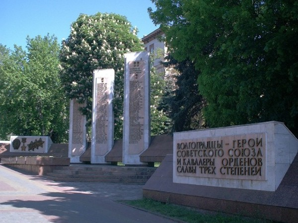На стенах Зала мозаикой выложены 34 траурных знамени, на которых перечислены 7200 имен и фамилий бойцов, погибших при защите Сталинграда.
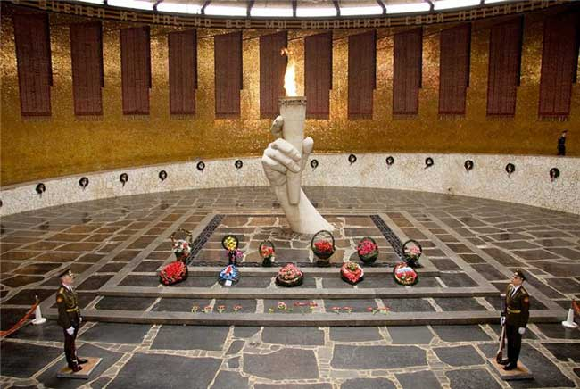Здесь находится знаменитая скульптура русского воина-богатыря, поднявшегося на защиту страны. В памятнике воплощен образ маршала Василия Чуйкова.
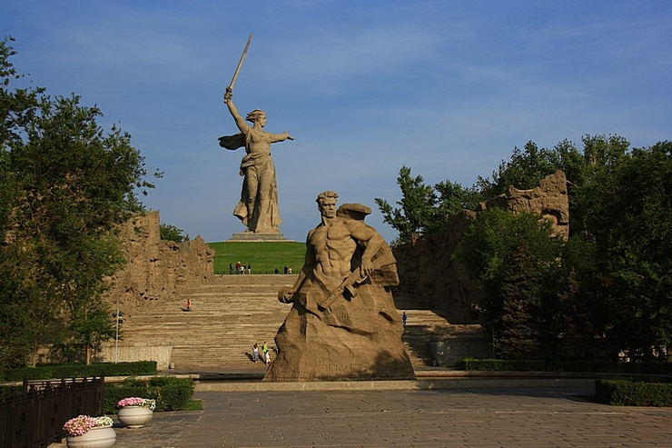Важный элемент комплекса на Мамаевом кургане. На стенах изображены реальные сцены сражения, включая защиту Дома Павлова и героическую гибель Михаила Паникахе. Показать на карте
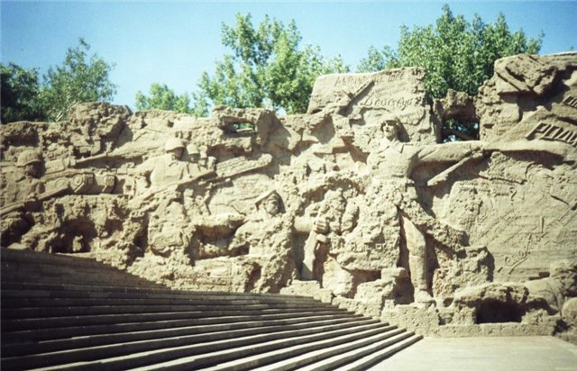В центре площади расположен бассейн, который символизирует реку Волгу. Справа от него - шесть скульптур, на которые нельзя смотреть без слез...
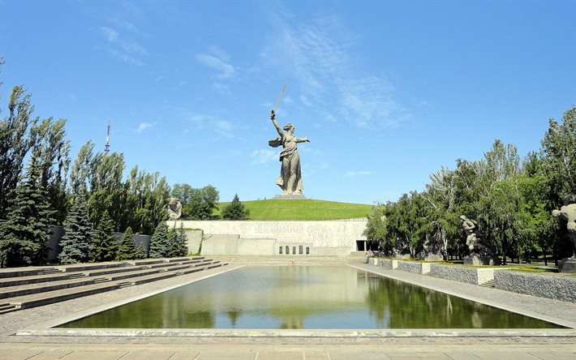В сентябре 1942 года в доме укрепилась разведгруппа из четырех солдат, возглавляемая сержантом Павловым. Немцы безуспешно атаковали здание в течение двух месяцев.
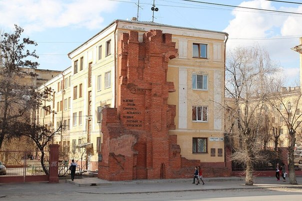Шокирующее зрелище – изрешеченное пулями кирпичное здание, которое не стали восстанавливать после войны. Мельница действовала до сентября 1942 года.
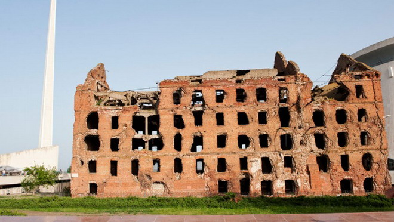Самое драматичное место на территории Мамаева кургана. Скульптура скорбящей матери, которая держит на руках погибшего сына.
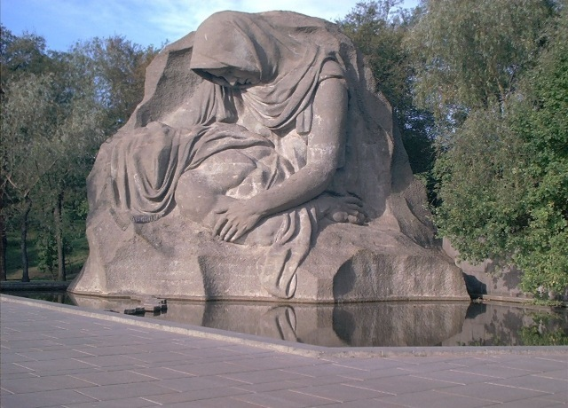По обеим сторонам 220-метровой аллеи на Мамаевом кургане высажены трава, кустарник и пирамидальные тополя, которые стоят прямо, словно воинский строй.
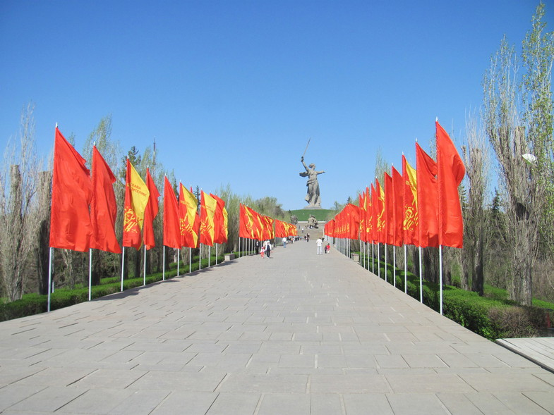На каменной стене изображено шествие - мужчины, женщины и дети несут цветы и приспущенные знамена, чтобы отдать почести погибшим героям Сталинградской битвы.
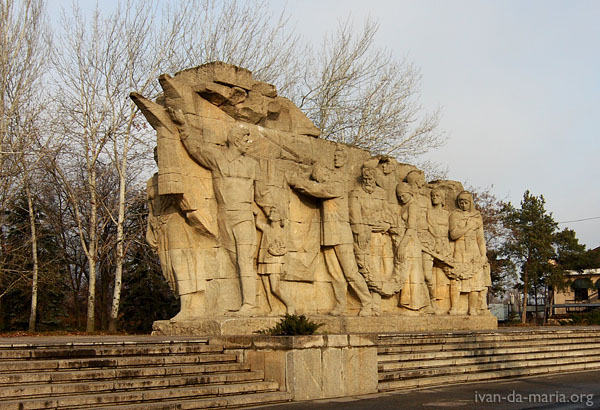Памятник Ильичу, который попал в книгу рекордов Гиннесса как самая высокая (57 метров с постаментом) статуя реально существовавшему человеку.
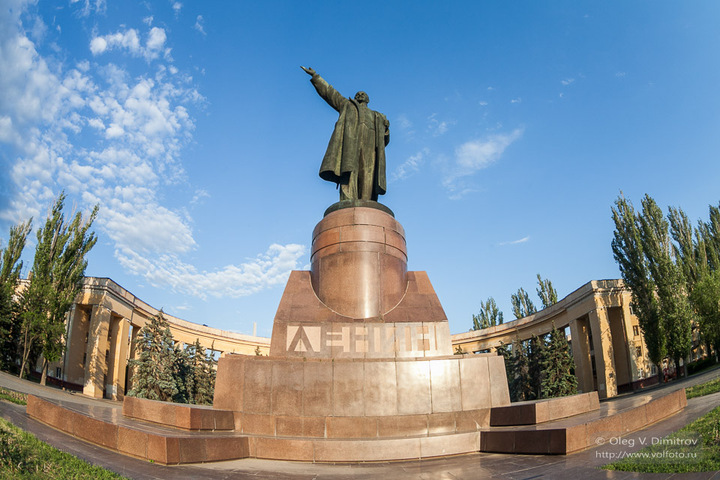